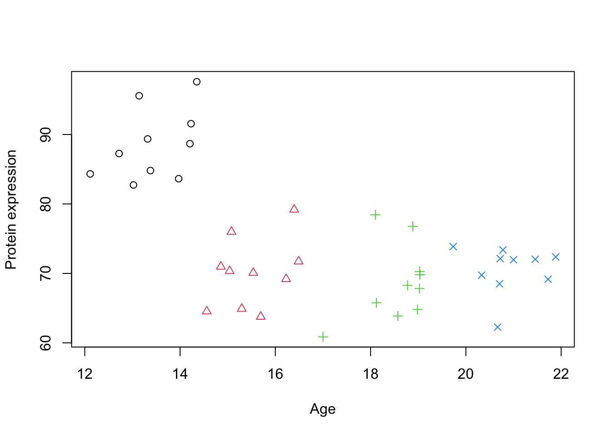
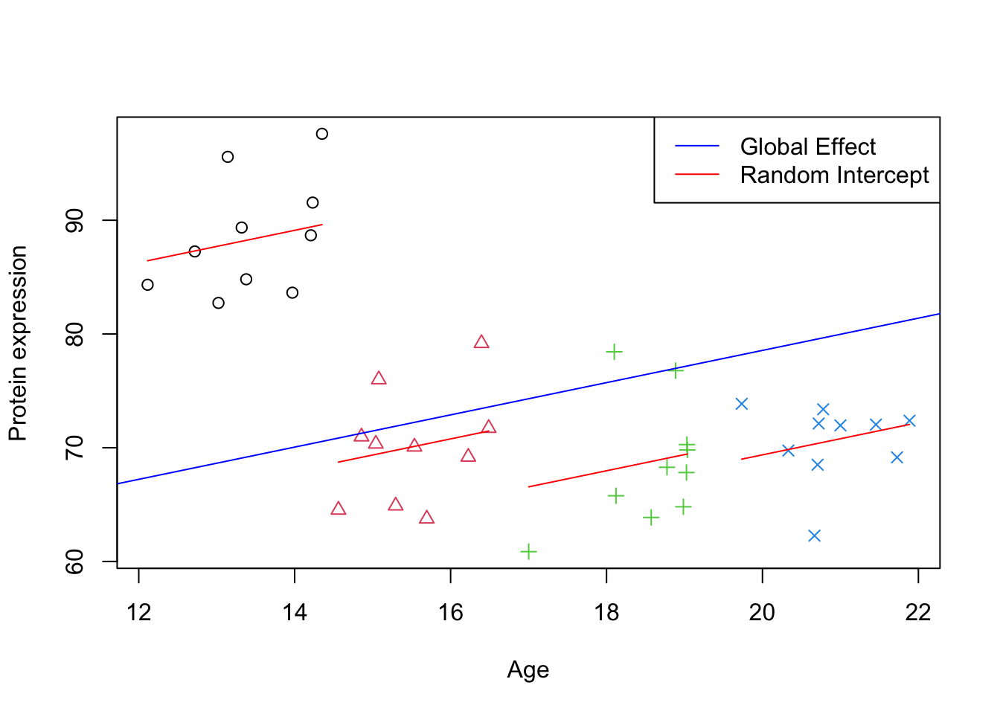

As briefly mentioned in the previous chapter, mixed-effects models (also known as multilevel or hierarchical models) are used introduce random effects to account for the cluster variations. This approach allows us to model the dependency structure due to clusters without having to estimate a separate parameter for each cluster effect. Mixed-effects models incorporate the clustering in the variance-covariance structure of the data, which provides a more parsimonious and interpretable model, especially when our primary interest lies in the fixed effects, such as the main effect of Age in the previous example.
Correlated is more common in biology than one might think. For example:
Repeated Measurements: Suppose you’re measuring a patient’s blood pressure over time. Measurements from the same patient will naturally be more similar to each other than those from different patients. A mixed-effects model handles this by modeling the variation between patients.
Nested Designs: Imagine studying the effectiveness of a new drug on mice housed within different cages. Mice within the same cage might be more alike due to shared environments. A mixed-effects model accounts for both variation between mice and variation between cages.
Longitudinal Studies: When tracking the growth of trees over time, measurements from the same tree will be more correlated than those from different trees. Here, a mixed-effects model can account for the individual tree’s growth patterns.
Multi-omics Studies: Omics data (genomics, transcriptomics, proteomics, etc.) from the same individual will show correlations due to underlying biological pathways. A mixed-effects model can tease apart the effects of different omic layers while accounting for their relationships within a person.
Family-based Disease Studies: Genetic variations and environmental exposures tend to cluster within families. Mixed-effects models can effectively model these familial factors when investigating how they contribute to disease risk.
Mixed-effects models are a powerful tool for analyzing complex biological datasets, offering improved accuracy and providing valuable insights into the sources of variability in disease studies.
Why “Mixed”?
Mixed models get their name because they combine two types of effects: fixed effects and random effects. This combination is what makes them so valuable for analyzing complex data.
Fixed Effects
The statistical models you might be familiar with, like linear regression or ANOVA, focus on “fixed effects.” These are the direct relationships between your chosen variables and the outcome you’re interested in. Fixed effects are the factors you control or are primarily interested in. If you’re studying the effect of age on protein expression, age is your fixed effect. A fixed effect will contain all possible levels of a factor in the experiment, measuring a few specific instances of interest. The key premise of the fixed-effect model is that there is one true effect size that is common to all the studies being analyzed. This model assumes that any observed variation among study results is solely due to sampling error within studies, and not due to actual differences in effect sizes across studies. Therefore, the goal of a fixed-effect analysis is to estimate this common true effect size.
Let’s think about a research question asking if a specific vitamin supplement reduces the duration of common cold symptoms. Multiple clinical trials have been conducted to evaluate the effect of this vitamin supplement on the duration of common cold symptoms. Each trial uses the same dosage of the supplement and has similar participant demographics (e.g., age, health status). The researchers conducting the analysis believe that, given the standardized intervention and population, the supplement should have a consistent effect across all trials.
Studies Reviewed: - Study 1: 100 participants, average reduction in symptom duration of 1.5 days. - Study 2: 150 participants, average reduction in symptom duration of 1.4 days. - Study 3: 120 participants, average reduction in symptom duration of 1.6 days. - Study 4: 130 participants, average reduction in symptom duration of 1.3 days.
Fixed-Effect Model Assumptions in this Example:
Single True Effect Size: The assumption here is that there is one true effect size reflecting the average reduction in the duration of common cold symptoms due to the vitamin supplement. This is based on the controlled administration of the supplement and the homogeneous nature of the participant groups across the trials.
Variation Due to Sampling Error: The slight differences in observed effects among the studies (e.g., some showing a 1.3-day reduction while others show a 1.6-day reduction) are attributed to sampling error—random variation due to the different samples of participants in each study.
Goal: To estimate the common true effect size of the vitamin supplement on reducing the duration of cold symptoms, a fixed-effect analysis is employed. This involves calculating a weighted average of the effect sizes from the individual trials, with greater weight given to larger trials since they are less prone to sampling error.
Through the fixed-effect model analysis, it might be concluded that the specific vitamin supplement leads to an average reduction of approximately 1.4 days in the duration of common cold symptoms. This conclusion is based on the premise that the variation in results across the trials is solely due to sampling error, without accounting for potential underlying differences in participant response to the supplement, as such variability is assumed to be negligible given the standardized conditions of the trials.
The primary limitation of using a fixed-effect model, lies in its underlying assumptions about the homogeneity of effect sizes across studies. This model assumes that there is one true effect size that applies to all studies, and any observed variability in outcomes is solely due to sampling error. However, this assumption can be overly simplistic and may not always hold true, especially in biological and medical research where variability is the norm rather than the exception.
Random effect
The random-effects offer a more flexible and realistic approach, especially in contexts where between-study variability is expected or observed. The defining feature of the random-effects model is the assumption that there is a distribution of true effect sizes across studies, and the goal is to estimate the mean of this distribution. This approach accounts for variation not only within studies (due to sampling error) but also between studies, recognizing that different studies may inherently have different true effect sizes due to various factors (e.g., differences in populations, interventions, outcomes measured).
Returning to our scenario of evaluating the impact of a vitamin supplement on the duration of common cold symptoms, let’s consider that the clinical trials are conducted across various geographical locations, each with a distinct demographic and environmental profile. These location-based groups could inherently influence how participants respond to the supplement, independent of the supplement’s effect itself. We would introduce random intercepts for each geographical location. This means that while we are still interested in estimating the overall effect of the vitamin supplement on symptom duration, we also acknowledge that each location starts from a different baseline in terms of average symptom duration without the supplement. However, we actually don’t directly estimate these baselines but rather assume that these baselines are randomly samples from a distribution of baselines in the population with certain statistical properties. Therefore, we are not interested in each single baseline but we want to know statistical properties of the distribution of baselines.
In summary, the fixed-effect model’s generalization is limited to the “levels” within the experiment, meaning it applies to populations or conditions that exactly match those of the included studies. It treats the effect as if it were a fixed property of the specific scenarios tested. In contrast, the random-effects model allows for generalization to “levels beyond those that took part in the study,” acknowledging that the effect sizes are part of a distribution across a wider population. This model treats the effect as a variable property reflecting a range of possible scenarios, including those not directly observed in the analysis.
This might sounds too complicated or abstract. We are going to clarify this with a few examples.
Ingredients
In this section, we will try to clarify what information do we need in order to fit a linear model.
Grouping Structure of the Data
The first and most important thing is to understand the data we are dealing with. Before we can make any attempt to use mixed models, we need to know what kind of grouping structure we want to capture. Mixed models are particularly useful when data is collected in groups or clusters, such as measurements from different subjects, schools, geographical locations, or time points within subjects. Identifying the hierarchy or nested structure where observations are grouped within higher-level units is crucial. This grouping structure can significantly influence the correlations among observations, as data points within the same group are likely to be more similar to each other than to data points in different groups. Understanding this structure allows us to correctly model the random effects, which account for the variability at different levels of the data hierarchy, thereby improving the accuracy and interpretability of our results. By incorporating these random effects, mixed models enable us to make inferences about both the fixed effects, which are consistent across groups, and the random effects, which vary across groups.
Without having this information, we cannot use standard mixed models. This grouping must be categorical, not continuous, as mixed models rely on categorical variables to define the levels of the hierarchy or nested structure within the data. Categorical grouping allows us to classify observations into distinct categories or groups that share common characteristics.
It is obvious but worth mentioning that these grouping should not be confused with random effects.Random effects are calculated based on the assumption that data points within the same group may share more similarities with each other than with data points from different categories, thus accounting for the within-group correlation. Therefore, the identification of categorical groupings is not just a step in the analysis but a prerequisite for accurately calculating and interpreting the random effects that are fundamental to the mixed model’s approach to data analysis.
Important
You cannot use continuous data as grouping if it does not have levels. Without these discrete levels, it becomes impossible to define the clusters or hierarchies necessary for calculating random effects. To effectively employ mixed models, one must either use inherently categorical variables or discretize continuous variables into meaningful categories.
Note
Sometimes it is not clear what grouping of data exist. Or even what should be used as grouping. In often (but not always), the grouping is something different than what we are interested in. For example, let’s say, we have gathered data from patients with a disease and attempted to find a matched control based on certain characteristics such as age, BMI etc. The group of interest here is disease vs. healthy and a possible grouping variable for random effect would be a match ID for the a each disease and its matched control.
The last thing i would like to mention is that, how many levels the random effect grouping should have in order to be included in the model. Although there is no golden consensus about it but most people tend to agree that the number levels of the group factor should be more than five to be accurately modeled by mixed models. Although some argue that with even two levels, mixed model will be like classical linear regression one should be extra cautious about it.
Design for fixed and random effects
Now that we have identified the grouping structure of the data, we need to decide what effects are fixed and what effects are random with respect to the grouping structure of the data. This is again might be confusing a bit but if we start asking ourselves a few questions, it might clarify the whole concept.
It is important to stress that the main reason we have chosen to go with mixed models is that we believe there is a grouping in our data that somehow affects some of the effects in our study. And by saying effect we mean the influence or impact that a particular variable has on the outcome of interest.
So here comes the first and a key question:
Do we believe a particular effect varies across the grouping structure of the data? if we do not believe that a particular effect varies across the grouping structure of the data, then we may consider modeling this effect as a fixed effect without taking care of the grouping structure.
If the answer to this question is yes. Then we ask ourselves another key question.
Are we interested in estimating the effect specific to the groups? Now that we have decided to take care of the grouping structure. We might be interested in estimating the effect of interest in each of groups or even compare them across the groups. You might want to even calculate p-values for these. If this is so then you might want to model these as fixed effect for example by including them as covariate (or blocking/control variable or even interaction) in the model. Doing so however, will force the model to estimate these effect thus spending degrees of freedom.
If however, we are still interested in taking care of the grouping but instead of estimating the effect in each group, we are happy just to know how much variability is in the effect of interest across the groups, then we are going to consider modeling that effect as random. This will instruct the modeling application to instead of estimating effects for each group (could be hundred of groups), just come up with estimates of few parameters showing the variability. Please note that these effects can be anything from baseline, slopes, interaction etc.
Do we have a large number of groups, and are some of these groups potentially unobserved? Random effects models are particularly useful when dealing with a large number of groups, especially when some groups in the population might not be represented in the sample. Random effects assume that the observed groups are a random sample from a larger population of groups, allowing for generalization beyond the specific groups in the study.
However, as said before, instead of estimating parameters for each group, then calculate variance across the groups. If the number of levels in each group is too few (like two or something like that), the estimated variance is not going to be accurate. So you might want to actually get back and consider using classical models.
By asking these questions, we can better clarify the roles of fixed and random effects. These things are going to be further clarified when we start working on a few examples.
Examples (Mixed models in R )
We get back our simulated data in the previous chapter and try to model it using mixed models. Before proceeding make sure that you have installed lme4 package as this is what we are going to use throughout this section.
Just to remind you, the idea was to examine the relationship between Age and Protein expression.
Code
simulate_grouped_trend <-function(group_count =5, points_per_group =10, global_slope =-10, global_intercept =30, group_slope =2, noise_sd =50) {set.seed(123) # Setting a seed for reproducibility# Initialize an empty data frame to store the simulated data data <-data.frame(x =numeric(), y =numeric())# Loop to create each groupfor (i in1:group_count) { x_start <-12+ (i -1) * (10/ group_count) # Stagger the start of x for each group x <-runif(points_per_group, min = x_start, max = x_start + (10/ group_count))# Apply a local positive trend within the group, but maintain the global negative trend local_intercept <- global_intercept + global_slope * (x_start + (10/ (2* group_count))) +rnorm(1, mean =0, sd = noise_sd) y <- local_intercept + group_slope * (x - x_start) +rnorm(points_per_group, mean =0, sd = noise_sd)# Combine this group with the overall dataset group_data <-data.frame(x = x, y = y,group=i) data <-rbind(data, group_data) }return(data)}# generate simulated datadata_int <-simulate_grouped_trend(group_count =4,points_per_group =10,global_slope =-2,global_intercept =100,group_slope =4,noise_sd =5)# set group to factordata_int$group <-factor(data_int$group)# plot the dataplot(data_int$x,data_int$y,xlab="Age",ylab="Protein expression",col=data_int$group,pch=as.numeric(data_int$group))

Figure 1: A scatter plot of Age vs. Protein expression
Because there are some grouping structure in data, we decide to take care of it. Let’s say that each group is a random clinic that we decided to get some sample from. So we now have identified the grouping structure in our data that might influence the effect of interest (Age).
What we believe is that the effect of Age on the protein expression is constant in each of the groups. However, due to either technical issues with the instruments or even demographics, each group might have different baselines (starting point) for the protein expression. This gives us a hint that we might have to model intercept differently for each group. This decision gives us two choices, model this intercept as fixed or random effect.
Me as a researcher tell you in addition to the effect of age, I would like to know how much differences exactly are between each of these clinics. Therefore i want to use fixed effect to exactly pinpoint the estimated baseline for each of the clinic and compare them against each other.
You however, argue that there is no reason to do that. We just picked a few random clinics, there is no point in knowing by how much clinic 1 is different to clinic 2 because we could have selected and other random clinics in the world. So let’s model this as random effect to get the variance of the intercepts across clinics. By modeling the intercept as a random effect, we acknowledge that each clinic has its own baseline level of protein expression due to various unmeasured factors such as technical differences in equipment or demographic variations. This approach allows us to account for the inherent variability between clinics without focusing on the specific differences between any two clinics. Instead, we aim to understand the general variability of baseline protein expression levels across clinics.
We start using the classical approach (as we saw in the previous chapter) using lm function with the following formula y ~ 1+x+group:
Note
We have included 1 in the model just to stress that there is an intercept in the model. Obviously, y ~ 1+x+group is identical to y ~ x+group
Code
# Fit a linear regression modelmodel_lm <-lm(y ~1+x+group, data = data_int)summary(model_lm)
Call:
lm(formula = y ~ 1 + x + group, data = data_int)
Residuals:
Min 1Q Median 3Q Max
-7.7577 -3.2657 -0.1872 1.4925 10.7686
Coefficients:
Estimate Std. Error t value Pr(>|t|)
(Intercept) 58.798 15.341 3.833 0.000505 ***
x 2.213 1.136 1.949 0.059406 .
group2 -23.072 3.133 -7.364 1.30e-08 ***
group3 -31.187 6.159 -5.064 1.32e-05 ***
group4 -34.509 8.716 -3.959 0.000351 ***
---
Signif. codes: 0 '***' 0.001 '**' 0.01 '*' 0.05 '.' 0.1 ' ' 1
Residual standard error: 4.625 on 35 degrees of freedom
Multiple R-squared: 0.786, Adjusted R-squared: 0.7615
F-statistic: 32.13 on 4 and 35 DF, p-value: 2.832e-11
We saw this result before. This model has four different intercepts, one for each group and a single slope that is identical for each group.
Given this result, we have estimated the group coefficients and we can go ahead with comparing the groups or do whatever we wanted to do with these estimates. It is important that here we don’t have a global slope. We have four slopes, one for each group.
Now it is time to do the same analysis using the mixed model approach. The model that we are going fit using lmer function from lme4 is of form y ~ 1+x+(1|group). This part of the model, y ~ 1+x, we already know what it is. However, what this part (1|group) is new. The right part of | shows what variable we want to use as grouping factor by which we are going to fit our random effect (That is the group in our case). The left part of | is the effect we want to consider random. The left part is like a formula, similar to classical regression. which in this case, we just used 1. This means for our main model, y ~ 1+x which has an intercept (1) and a slope x, we would like to consider the intercept as random effect so we use 1.
Now that we know the structure of the model, let’s go ahead and do the modeling:
Code
library(lme4)# Fit a mixed linear regression modelmodel_lmm <-lmer(y ~1+x+(1|group), data = data_int)summary(model_lmm)
Linear mixed model fit by REML ['lmerMod']
Formula: y ~ 1 + x + (1 | group)
Data: data_int
REML criterion at convergence: 244.6
Scaled residuals:
Min 1Q Median 3Q Max
-1.73343 -0.61480 -0.00871 0.37734 2.22117
Random effects:
Groups Name Variance Std.Dev.
group (Intercept) 184.10 13.568
Residual 21.57 4.645
Number of obs: 40, groups: group, 4
Fixed effects:
Estimate Std. Error t value
(Intercept) 50.205 18.893 2.657
x 1.418 1.030 1.377
Correlation of Fixed Effects:
(Intr)
x -0.932
This output has some key differences to the previous approach. The first thing is in the fixed effect part:
Code
as.list(summary(model_lmm))[['coefficients']]
Estimate Std. Error t value
(Intercept) 50.205206 18.89260 2.657401
x 1.417913 1.02998 1.376642
Unlike lm, here there is no estimate for each group. There is a single intercept and a single slope. These are global trends in the data with their corresponding Std. Error and t value. But what happen with random effect and grouping of the data. This is what we can see in the Random effects part of the output:
Code
as.list(summary(model_lmm))[['varcor']]
Groups Name Std.Dev.
group (Intercept) 13.5684
Residual 4.6447
Depending of what type of random effect we have been fitting this table can have different headers. But generally, Groups, Name, Variance, Std.Dev. and Corr are part of it.
Each row of this table correspond to a source of variation in our data that is random because of a certain reason. In our model, we decided to consider only Intercept as a random effect for group. Therefore, the first row of the table tells us that there is random variability in Intercept between different group. This variability is quantified by a variance of 184.101 and a standard deviation of 13.568. This means that the average effect (or intercept) across groups can deviate from the overall (global) intercept by about 13.568 units, indicating substantial between-group variability. This is important to note that, we have actually never estimated any intercept for each group directly. But we have estimated the variability of intercepts across different groups, which allows us to account for the fact that each group may have a different starting point or baseline level in the response variable, even though these specific baseline levels are not directly calculated. You can think about this as the variance of the distribution of intercepts across the groups. Essentially, we’re modeling the distribution from which each group’s intercept is drawn.
The second row, labeled Residual, refers to the variability within each group that is not explained by the model predictors (because of random sampling). The variance here is 21.574, with a standard deviation of 4.645. This residual variance represents the individual differences or noise within groups after accounting for the modeled effects, including the random intercepts.
So before moving on let’s summarize what get got so far.
We used mixed models with a random intercept to model the effect of age on protein expression. We got an estimated global intercept (baseline) and slope (main effect of interest). We took care of the grouping structure of our data without directly estimating any additional parameters. In fact, what we estimated was intercept, slope, variance of Intercept and variance of residuals. One of the coolest thing here is that we would have estimated the exact same number of parameters if we our grouping structure had a lot more levels. But if we want to use grouping as covariate (in a classic model), we should modeled all of these levels!
Predicting the random intercept
Despite that we have not estimated the intercept for each of the group, we can still predict what would the intercept be for each them. We are going to see in the math section how that can be done, but for now, we leave the details and directly use the function ranef from lme4 package.
Code
print(ranef(model_lmm))
$group
(Intercept)
1 19.059412
2 -2.116552
3 -7.752078
4 -9.190783
with conditional variances for "group"
In this particular case, it gave us the differences from the overall intercept estimated in the mixed effects model. By extracting the random effects using the ranef function, we obtain insights into the specific adjustments needed for each group. We can now use the global intercept and these adjustments to visualize the predicted intercept.
Code
# Plotting the initial scatter plot with points colored by group and shape determined by groupplot(data_int$x, data_int$y, xlab="Age", ylab="Protein expression",col=data_int$group, pch=as.numeric(data_int$group))# Looping through each unique group in the datasetfor (group inunique(data_int$group)) {# Subset data for the current group group_data <- data_int[data_int$group == group,]# Calculate the intercept for the group by adding the fixed intercept to the group's random effect intercept <-fixef(model_lmm)[1] +ranef(model_lmm)[[1]][group, 1]# Extract the fixed effect slope from the model slope <-fixef(model_lmm)[2]# Draw a line for the group using the calculated intercept and slopelines(y = intercept + slope * group_data$x, x = group_data$x, col ="red", lty =1)}# Draw a global effect line using the fixed effect intercept and slope from the modelabline(a =fixef(model_lmm)[1], b =fixef(model_lmm)[2], col ="blue")# Adding a legend to the plotlegend_labels <-c("Global Effect", "Random Intercept")legend("topright", legend = legend_labels, col =c("blue", "red"), lty =1)

Figure 2: Scatter plot of Age vs. Protein expression per group with random intercept
Here we have plotted predicted best unbiased estimated trend per group and also the global trend. We can see that all the lines are parallel (as we still did not model slope per group) and there is a deviation of slope in each of the groups compared to the global trend.